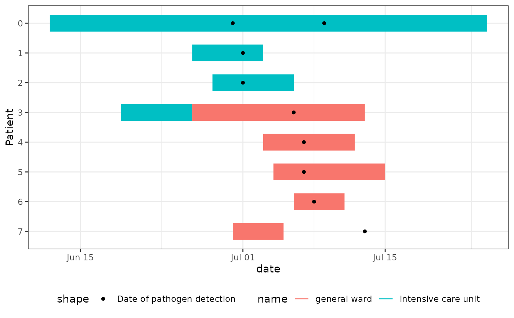

This hospital outbreak is inspired by typical hospital outbreaks with resistant 4MRGN bacterial pathogens. These outbreaks start silent, since they are not initially apparent from the symptoms of the patient.
Format
A data frame with 8 rows and 9 columns:
Patient- Patient ID (0-7)ward_name_1- Name of first ward where patient stayedward_start_of_stay_1- Start date of stay in first wardward_end_of_stay_1- End date of stay in first wardward_name_2- Name of second ward where patient stayed (if applicable)ward_start_of_stay_2- Start date of stay in second ward (if applicable)ward_end_of_stay_2- End date of stay in second ward (if applicable)pathogen_detection_1- Date of first positive pathogen testpathogen_detection_2- Date of second positive pathogen test (if applicable)
Patient details:
Patient 0: Index case (ICU), infected early on but detected June 30, 2024
Patient 1-2: ICU patients, found during initial screening
Patient 3: Case who moved from ICU to general ward prior to the detection of patient 0, potentially linking both outbreak clusters. Detected during extended case search
Patient 4-6: General ward cases, found after Patient 3's detection
Patient 7: General ward case, detected post-discharge by GP, who notified the hospital
Examples
library(dplyr)
library(tidyr)
library(ggplot2)
# Transform hospital outbreak line list to long format
linelist_hospital_outbreak |>
pivot_longer(
cols = starts_with("ward"),
names_to = c(".value", "num"),
names_pattern = "ward_(name|start_of_stay|end_of_stay)_([0-9]+)",
values_drop_na = TRUE
) -> df_stays_long
linelist_hospital_outbreak |>
pivot_longer(cols = starts_with("pathogen"), values_to = "date") -> df_detections_long
# Create Epi Gantt chart showing ward stays and test dates
ggplot(df_stays_long) +
geom_epigantt(aes(y = Patient, xmin = start_of_stay, xmax = end_of_stay, color = name)) +
geom_point(aes(y = Patient, x = date, shape = "Date of pathogen detection"),
data = df_detections_long
) +
scale_y_discrete_reverse() +
theme_bw() +
theme(legend.position = "bottom")
#> Warning: Removed 7 rows containing missing values or values outside the scale range
#> (`geom_point()`).
